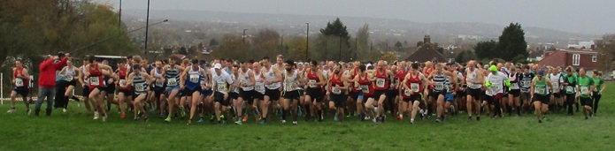

The second race in the Kent Fitness League 2024/25 season took place in Eltham on Sunday Nov 24th, writes Jim Knight. 535 runners from 18 Kent Athletics Clubs, including a team of 33 from Sevenoaks, tackled the hilly course through Oxleas Woods in mild but windy conditions.
After winning the first race in Swanley on Nov 10th, Sevenoaks ladies were keen to stay ahead of Petts Wood Runners – who fielded a massive team of 116 runners in Eltham including 51 women (vs Sevenoaks team of 14 women).
Sevenoaks’ star runner Andrea Berquez led throughout the race to secure a comfortable win in 33 minutes 52 seconds – two minutes faster than last year and over 2 minutes clear of 2nd placed Sarah Shepheard of Paddock Wood AC.
The other scoring team members all ran brilliantly - Nicola Glover (7th), Cath Linney (16th), Joanna Rodda (17th), and Vanessa Gilmartin (24th) – to score a comfortable win over Canterbury Harriers in 2nd position.
In the men’s race, Jamie Philip ran well to finish 11th (2nd M45) just ahead of 20-year-old Jake Mears who placed 16th in his first KFL race for the club.
The other members of the scoring team were Guillaume Nineven (26th), Ed Saunders (30th), William Palmer (52nd), Steven Hough (55th), Paul Fanti (60th) and Keith Dowson (76th & 1st M60).
Outside the scoring teams there were other great performances with Sally Shewell returning from injury to win the W65 category, and in M70 Jeremy Winter and Simon Hallpike were placed 2nd and 3rd.
Sevenoaks AC were 2nd in the men’s team race, just behind Medway & Maidstone AC, but the combined team recorded their first win for a year and now lead the series just ahead of Petts Wood Runners and Paddock Wood AC.
The SAC results were:
| Ov Pos | Lg Pos | Bib | Runner | Age | Time | Club | Score | Rtg | # |
|---|---|---|---|---|---|---|---|---|---|
| 11 | 11 | 894 | Jamie Philip | 47 | 31:44 | Sevenoaks AC | V40:1 | 97.16 | 5 |
| 16 | 16 | 1140 | Jake Mears | 20 | 32:09 | Sevenoaks AC | M1 | 95.74 | Debut |
| 26 | 26 | 891 | Guillaume Nineven | 39 | 32:54 | Sevenoaks AC | M2 | 92.90 | 17 |
| 30 | 30 | 899 | Edmund Saunders | 42 | 33:30 | Sevenoaks AC | V40:2 | 91.76 | 28 |
| 35 | 1 | 1077 | Andrea Berquez | 39 | 33:52 | Sevenoaks AC | V35 | 100.00 | 14 |
| 53 | 52 | 893 | William Palmer | 52 | 34:59 | Sevenoaks AC | V50:1 | 85.51 | 11 |
| 56 | 55 | 873 | Steven Hough | 51 | 35:10 | Sevenoaks AC | V50:2 | 84.66 | 3 |
| 61 | 60 | 860 | Paul Fanti | 51 | 35:38 | Sevenoaks AC | M3 | 83.24 | 4 |
| 70 | 68 | 866 | Luke Green | 33 | 36:11 | Sevenoaks AC | NSBLS | 80.97 | 3 |
| 74 | 72 | 874 | Andrew Hutchinson | 45 | 36:20 | Sevenoaks AC | NSBLS | 79.83 | 25 |
| 78 | 76 | 857 | Keith Dowson | 61 | 36:44 | Sevenoaks AC | V60 | 78.69 | 19 |
| 91 | 87 | 886 | Andrew Monk | 48 | 37:36 | Sevenoaks AC | NS | 75.57 | 12 |
| 94 | 90 | 1141 | Paul Shelley | 50 | 37:47 | Sevenoaks AC | NS | 74.72 | 10 |
| 113 | 7 | 864 | Nicola Glover | 36 | 38:38 | Sevenoaks AC | F1 | 96.72 | 17 |
| 116 | 109 | 907 | Daniel Witt | 49 | 38:42 | Sevenoaks AC | NS | 69.32 | 74 |
| 129 | 118 | 890 | Sebastian Naughton | 50 | 39:16 | Sevenoaks AC | NS | 66.76 | 19 |
| 141 | 126 | 850 | Steve Carter | 45 | 40:08 | Sevenoaks AC | NS | 64.49 | Debut |
| 143 | 16 | 880 | Catherine Linney | 55 | 40:12 | Sevenoaks AC | V55 | 91.80 | 51 |
| 146 | 17 | 896 | Joanne Rodda | 48 | 40:19 | Sevenoaks AC | V45 | 91.26 | 7 |
| 150 | 133 | 1081 | Anthony Waldron | 57 | 40:30 | Sevenoaks AC | NS | 62.50 | 38 |
| 160 | 143 | 846 | James Baker | 60 | 40:45 | Sevenoaks AC | NS | 59.66 | 31 |
| 162 | 145 | 875 | David Killpack | 39 | 40:47 | Sevenoaks AC | NS | 59.09 | 12 |
| 169 | 150 | 844 | Brian Allen | 52 | 40:57 | Sevenoaks AC | NS | 57.67 | 8 |
| 172 | 153 | 869 | Rob Hadden | 56 | 41:10 | Sevenoaks AC | NS | 56.82 | 2 |
| 188 | 24 | 863 | Vanessa Gilmartin | 49 | 41:39 | Sevenoaks AC | F2 | 87.43 | 35 |
| 191 | 167 | 847 | Adam Bates | 41 | 41:48 | Sevenoaks AC | NS | 52.84 | 8 |
| 198 | 172 | 859 | Andrew Evans | 54 | 42:02 | Sevenoaks AC | NS | 51.42 | 59 |
| 214 | 31 | 848 | Elizabeth Bull | 37 | 42:53 | Sevenoaks AC | NS | 83.61 | 2 |
| 265 | 223 | 906 | Jeremy Winter | 70 | 45:35 | Sevenoaks AC | NS | 36.93 | 11 |
| 286 | 235 | 871 | Simon Hallpike | 71 | 46:25 | Sevenoaks AC | NS | 33.52 | 63 |
| 303 | 59 | 845 | Clare Ambrose | 56 | 47:10 | Sevenoaks AC | NS | 68.31 | 2 |
| 416 | 115 | 900 | Sarah Shewell | 65 | 51:31 | Sevenoaks AC | NS | 37.70 | 129 |
| 489 | 335 | 903 | Richard Thomas | 67 | 58:19 | Sevenoaks AC | NS | 5.11 | Debut |
The full results are here.
The next race in the series will take place in Knole Park, Sevenoaks, on December 1st when SAC will have the difficult task of organising the race and also fielding a strong team of runners. The race starts at 9 am.

The Kent Fitness League is a series of cross-country races between the 18 registered Athletics Clubs in Kent. Any number of club members can compete, but 13 are needed to score in the team competition – 8 men (of whom one must be aged 60+, two must be 50+ and two 40+) and 5 women (of whom one must be aged 55+, one 45+ and one 35+).